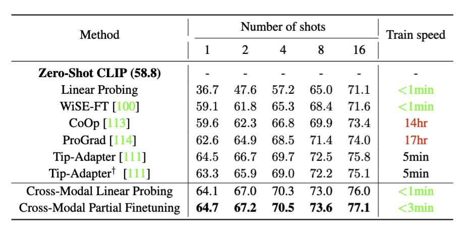
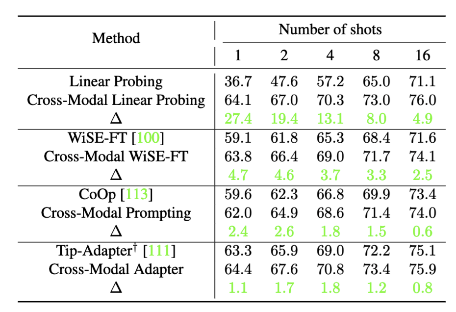
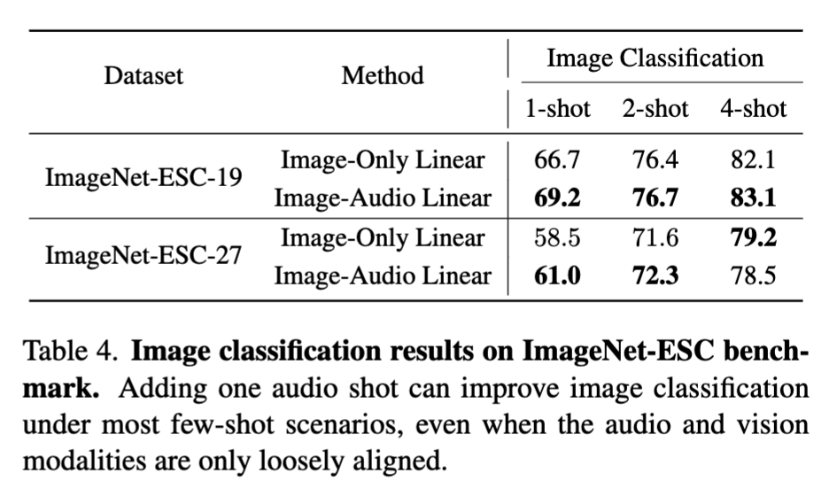
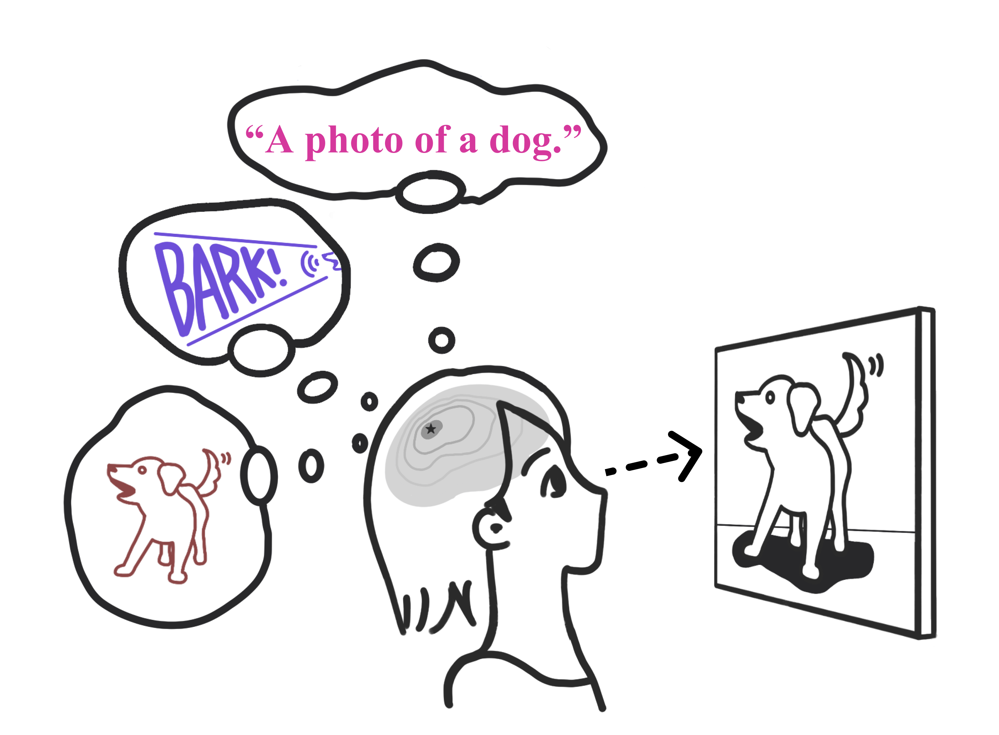

Multimodality Helps Unimodality:
Cross-Modal Few-Shot Learning with Multimodal Models
|
Carnegie Mellon University
|
Abstract
 |
The ability to quickly learn a new task with minimal instruction - known as few-shot learning - is a central aspect of
intelligent agents. Classical few-shot benchmarks make use of few-shot samples from a single modality, but such samples
may not be sufficient to characterize an entire concept class. In contrast, humans use cross-modal information to learn
new concepts efficiently. In this work, we demonstrate that one can indeed build a better visual dog classifier by
reading about dogs and listening to them bark. To do so, we exploit the fact that recent multimodal
foundation models such as CLIP are inherently cross-modal, mapping different modalities to the same representation
space. Specifically, we propose a simple cross-modal adaptation approach that learns from few-shot examples
spanning different modalities. By repurposing class names as additional one-shot training samples, we achieve SOTA
results with an embarrassingly simple linear classifier for vision-language adaptation. Furthermore, we show that our
approach can benefit existing methods such as prefix tuning and classifier ensembling. Finally, to explore other
modalities beyond vision and language, we construct the first (to our knowledge) audiovisual few-shot benchmark and use
cross-modal training to improve the performance of both image and audio classification.
Few-shot learning are less ambiguous with multimodality
Classic uni-modal few-shot setups (e.g., one-shot image classification) often face an inherent ambiguity -- if the training image contains a golden retriever
wearing a hat, how does the learner know if the task is to find dogs, golden retrievers, or even hats? On the other hand, humans have little trouble understanding and even generalizing from as few as one example. How so? We argue that humans make use of multiple modalities when learning
concepts. The example below demonstrates a one-shot learning scenario where the target concept is ambiguous, but becomes
clear once we add information from other modalities like language and sound.

Cross-modal adaptation with multimodal models
In this paper, we demonstrate that cross-modal understanding of different modalities (such as image-text or image-audio)
can improve the performance of individual modalities. That is, reading about dogs and listening to them bark
can help build a better visual classifier for them! To do so, we present a remarkably simple strategy for
cross-modal few-shot adaptation: we treat examples from different modalities as additional few-shot examples. Learning is straightforward
when using frozen textual and visual encoders, such as CLIP~\cite{radford2021learning}, that map different modalities to
the same representational space. In essence, we have converted the "n-shot" problem to a "(n+1)-shot" problem!

SOTA few-shot performance on 11 downstream classification tasks
In contrast to our cross-modal adaptation approach, most prior works simply follow the popular practice of finetuning unimodal
foundation models, such as linear probing (CLIP) for large vision models, or prompting (CoOp and CoCoOp) and adapter (Tip-Adapter) for large language
models. We find that all existing
methods (including WiSE-FT) repurpose the additional text features as
classifier weights instead of training samples. In this paper, we adopt the standard few-shot image classification benchmark for CLIP with 11 diverse datasets (e.g., ImageNet) and demonstrate that our method is
a more effective use of text information (even a simple linear classifier can achieve SOTA) but can also benefit prior unimodal few-shot approaches.
|  |
 |
Audios can improve image classification
We show that cross-modal adaption can generalize to audio modality (with the use of AudioCLIP). In other words, one can learn a
better dog visual classifier by listening to a dog barking. Please check out the paper for our audiovisual few-shot learning benchmark and full experiments.

Paper
|  |
Zhiqiu Lin, Samuel Yu, Zhiyi Kuang, Deepak Pathak, Deva Ramanan.
Multimodality Helps Unimodality:
Cross-Modal Few-Shot Learning with Multimodal Models
In Submission.
[Arxiv]
[Code]
|
Bibtex:
Acknowledgements
This research was supported by CMU Argo AI Center for Autonomous Vehicle Research.
|
{kind=link}